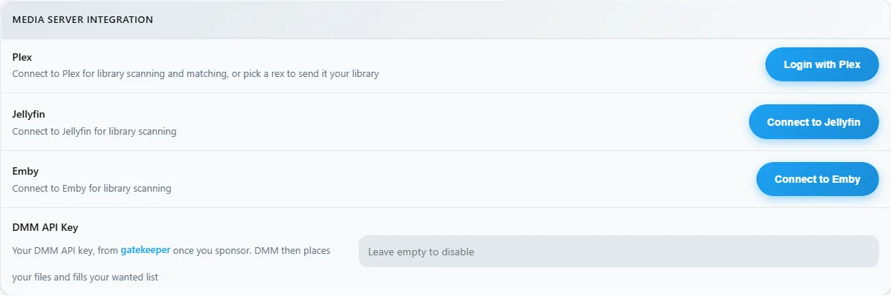

Una biblioteca de Real-Debrid en Plex con zurg
zurg muestra todo lo de tu cuenta de Real-Debrid como carpetas en tu ordenador, ya organizadas en movies y shows. Añade esas dos carpetas a Plex Media Server y toda tu biblioteca de Real-Debrid se reproduce en todas las apps de Plex, en streaming desde Real-Debrid y sin descargar nada antes. Instalas zurg una sola vez; trae su propio rclone, así que no hay que configurar nada más.
¿No quieres ejecutar Plex Media Server ni una unidad montada? rex con zurg muestra la misma biblioteca a las apps de Plex sin necesidad de ninguna de las dos cosas.
Lo que necesitas
- Un patrocinio. La versión nightly de zurg es solo para patrocinadores. Patrocina en gatekeeper y tu cuenta de GitHub tendrá acceso a la descarga. Qué te da un patrocinio explica el resto.
- Una cuenta premium de Real-Debrid y su token de API: Tu token de API de Real-Debrid te dice dónde encontrarlo.
- Plex Media Server en el mismo equipo que zurg. Plex lee los archivos de las carpetas de zurg, así que tiene que poder verlas. Después, cualquier app de Plex puede reproducir el contenido.
- Un equipo que se mantenga encendido: Windows 10 u 11, Linux, un Mac, o un equipo Linux con Docker.
1. Instala zurg
Cada página de instalación empieza con un instalador de una sola línea. Cuando aparezca Choose one or more providers in priority order:, escribe 1 para Real-Debrid y luego pega tu token.
El instalador termina con zurg doctor, una lista de líneas PASS.
2. Revisa las carpetas
Abre la unidad o carpeta de zurg. Deberías ver movies, shows, __all__, __downloads__, __unplayable__ y version.txt.
El primer inicio lee toda tu cuenta de Real-Debrid. Hasta que termine, las carpetas se quedan vacías. Para comprobarlo, abre http://localhost:9999/ready en el navegador: dirá ready cuando tu biblioteca esté cargada.
3. Añade las carpetas en Plex
In Plex Web, pulsa Add Library, el botón junto al nombre de tu servidor en la barra lateral:
- Elige Movies y pulsa Next.
- Pulsa Browse for media folder y elige la carpeta
moviesde zurg de la tabla de arriba, comoZ:\moviesen Windows. - Pulsa Add Library.
Haz lo mismo con TV Shows y la carpeta shows. Plex entonces escanea las dos y rellena los pósters y los títulos.
4. Haz que zurg avise a Plex de las novedades
Plex no se da cuenta cuando algo nuevo llega a tu cuenta de Real-Debrid. zurg se lo puede avisar. Abre el panel de zurg en http://localhost:9999/config/, ve a Media Server Integration y pulsa Login with Plex. Inicia sesión en Plex y elige tu servidor.

A partir de ese momento, zurg le pide a Plex que escanee cada carpeta que cambia. También desactiva algunos ajustes de Plex que son arriesgados en una biblioteca en streaming, como Empty trash automatically after every scan: Recommended Plex Settings los enumera.
Cuando algo va mal
¿Sigues atascado? Pregunta en el foro zurg-support de Discord. Getting help explica qué incluir.
Preguntas
¿Hay una guía para configurar DMM, zurg y rclone para hacer streaming en Plex?
Esta página. No tienes que configurar rclone tú mismo: el instalador de zurg lo descarga y zurg lo ejecuta. DMM es donde encuentras lanzamientos y los añades a tu cuenta de Real-Debrid (Qué es DMM y cómo usarlo). Después zurg los muestra en sus carpetas y Plex los detecta.
¿Las películas se descargan a mi ordenador?
No. Plex lee cada archivo de Real-Debrid a través de zurg cuando le das a play. zurg guarda una caché de lo que se ha reproducido, y puede crecer mucho: mira la fila de disco de arriba.
¿Puedo prescindir de Plex Media Server?
Sí, con rex. rex con zurg muestra tu biblioteca de zurg en las apps de Plex, sin Plex Media Server y sin montaje. También puedes usar ambos: Un solo archivo de Docker Compose ejecuta zurg, Plex Media Server y rex en una misma máquina.
¿También funciona con TorBox o Usenet?
Sí. El instalador de zurg también ofrece TorBox, AllDebrid, Premiumize, Debrid-Link, Offcloud y Usenet, y los coloca todos en las mismas carpetas movies y shows. Providers tiene una página para cada uno.